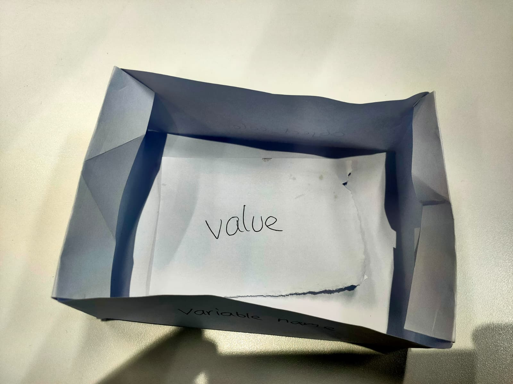
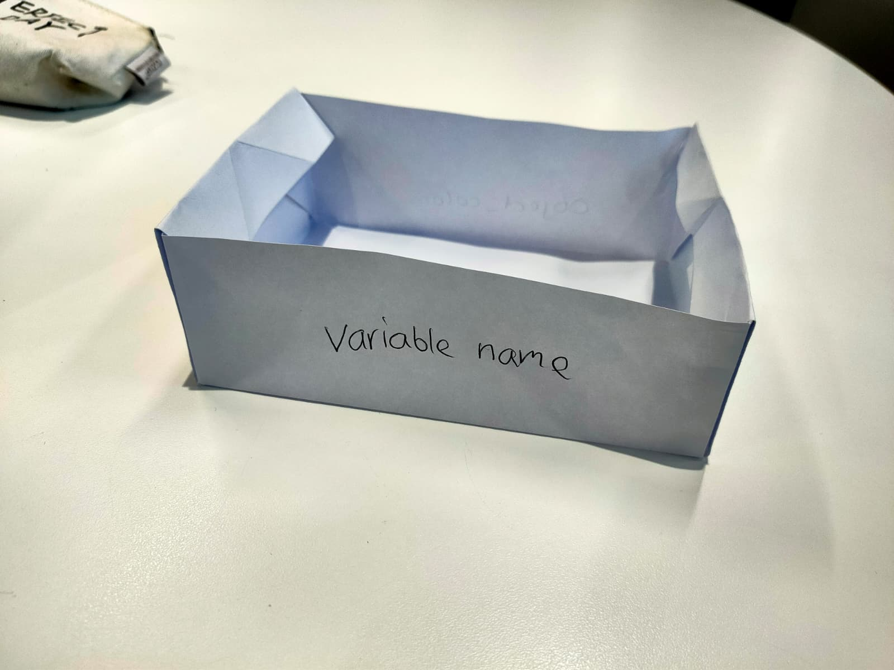
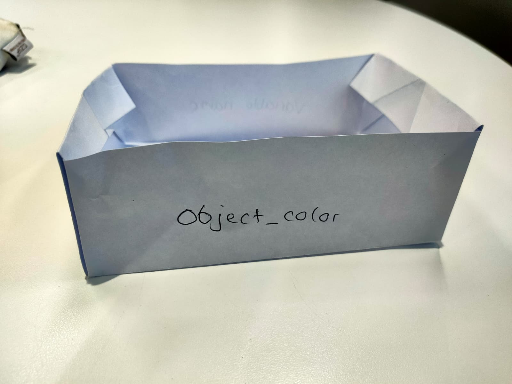

Project Overview
In this project we had to come up with a metaphor for a concept in programming, I opted for variable declaration in python. I crafted a small paper box, this would be representing the variable/variable name and in it is the actual variable value. Since the value is stored in the variable.


Variable Components
We can see the variable name on the left and the variable value on the right. The variable name is like a label on the box, while the variable value is the content inside the box. This metaphor helps to visualize how variables work in programming, where the name is used to reference the value stored within it.

Variables Explained Visually
Inside the box, we have a small piece of paper with the value "3" written on it. This represents the actual data stored in the variable. The box itself represents the variable as a container that holds this value. The label on the box (the variable name) allows us to access and manipulate the value inside it when we write code. This metaphor helps to clarify how variables function as named storage locations for data in programming.